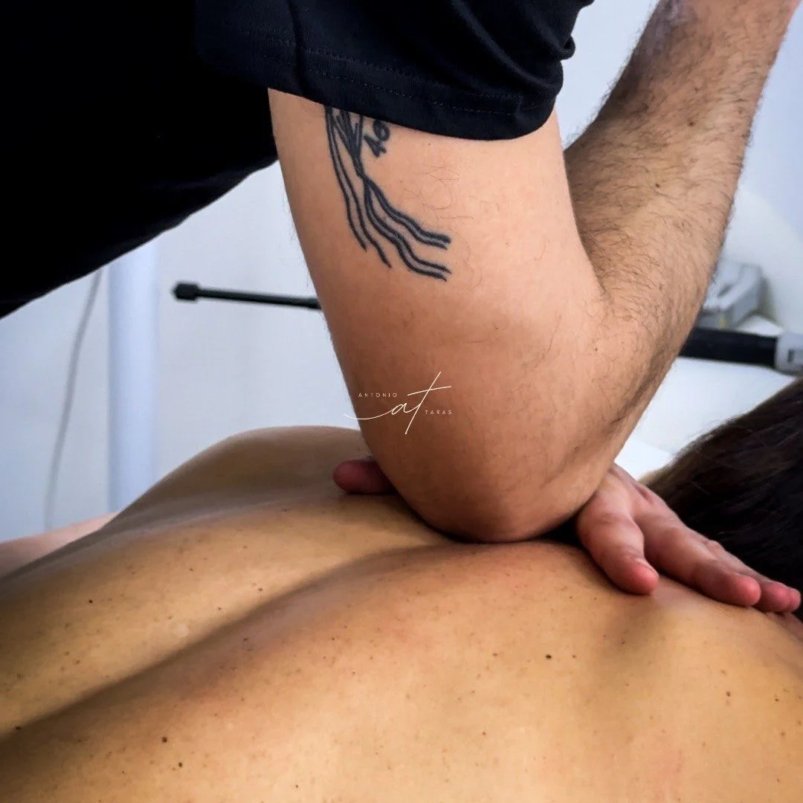
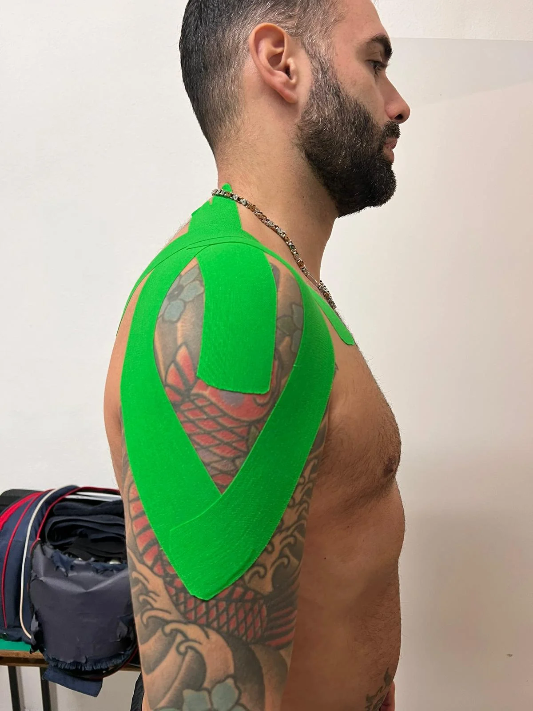
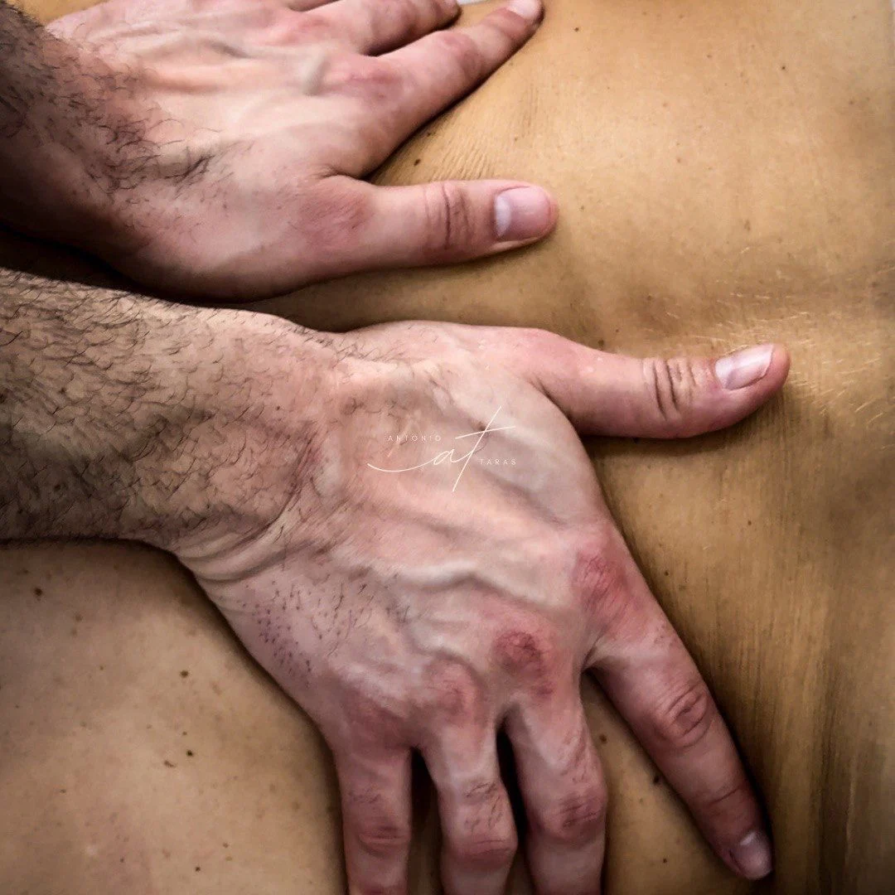
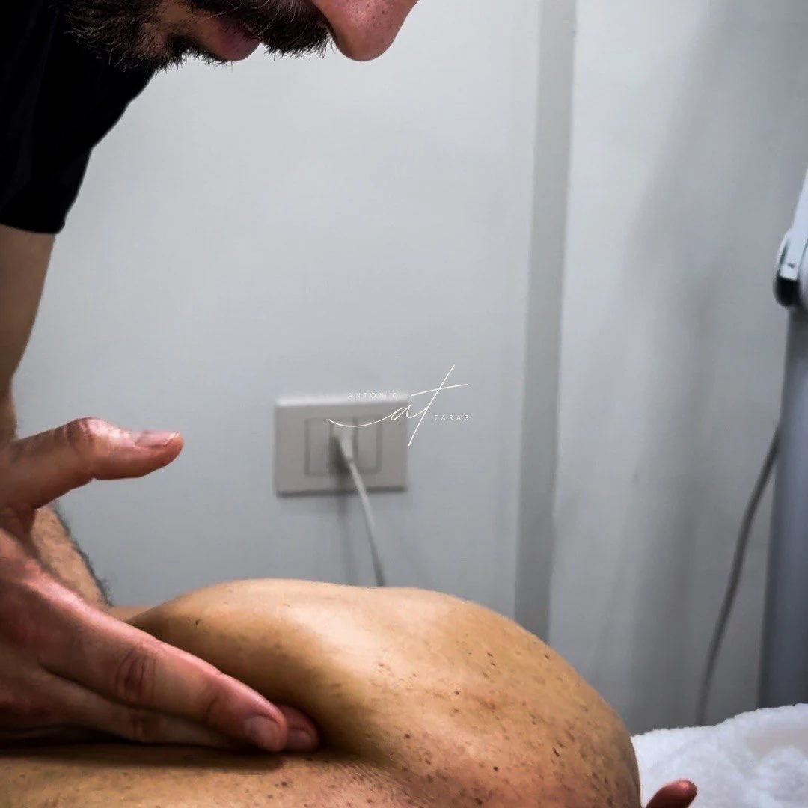
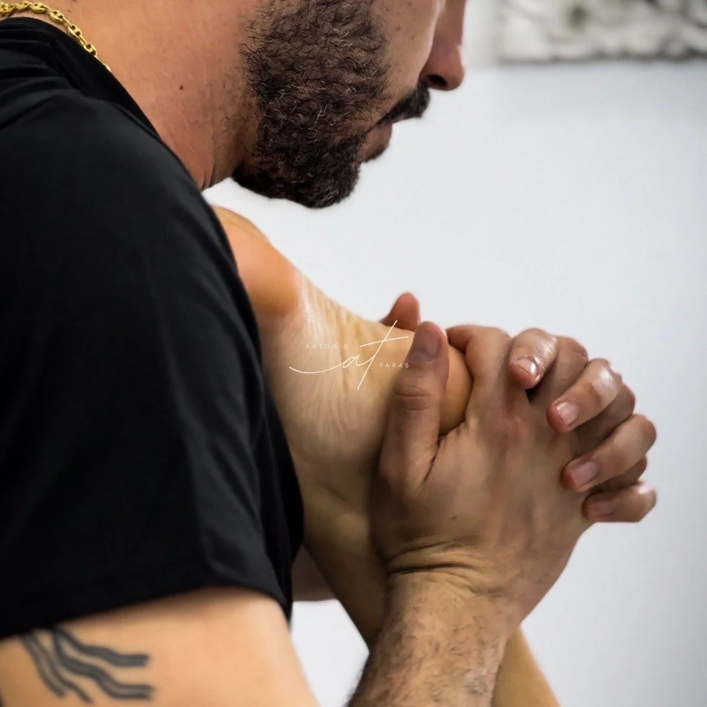
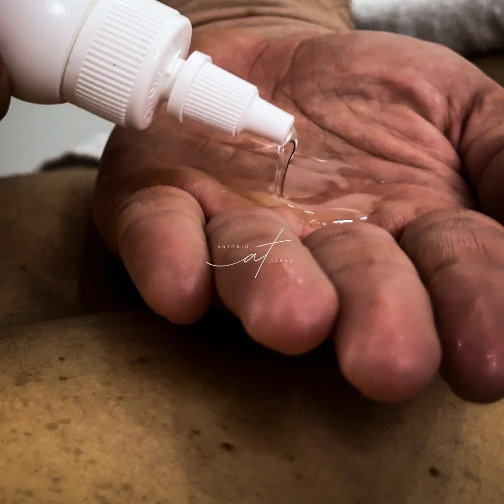

★★★★★
Esperienza molto positiva: professionalità, gentilezza e competenza, con una netta sensazione di benessere dopo il trattamento.
Olbia · in studio e home service
Massoterapia MCB e trattamenti per il benessere a Olbia: ascolto, manualità e percorsi mirati per ritrovare equilibrio, mobilità e leggerezza.

Si parte da anamnesi, ascolto e obiettivo della seduta: poi si sceglie il trattamento più adatto.

Chi sono
Mi chiamo Antonio e da oltre 10 anni accompagno le persone in un percorso di ritrovamento del benessere fisico e mentale.
So quanto possa essere logorante vivere con tensioni accumulate, stress cronico o un corpo che non si sente più “proprio”. Per questo il mio approccio non si limita al sintomo: lavoro sulla persona nella sua interezza, integrando la massoterapia con una visione olistica che tiene conto di corpo, mente ed emozioni.
“Ogni percorso è costruito intorno a te — alla tua storia, alle tue esigenze, al tuo ritmo.”
Recensioni
Recensioni reali da MioDottore, sintetizzate per mantenere la pagina chiara e leggibile. Il profilo riporta oltre 50 recensioni verificate.
Esperienza molto positiva: professionalità, gentilezza e competenza, con una netta sensazione di benessere dopo il trattamento.
Molto apprezzati attenzione al cliente, precisione nei trattamenti e capacità di mettere la persona a proprio agio.
Dopo anamnesi accurata è stato svolto un trattamento specifico, con miglioramenti percepiti già dalle prime sedute.
Super professionale e preparato: trattamento efficace, clima sereno e grande passione per il proprio lavoro.
Trattamenti
Massoterapia, supporto muscolare e percorsi di benessere integrati, scelti in base alla valutazione iniziale e all’obiettivo della persona.
Ogni percorso inizia con una valutazione approfondita e un’anamnesi generale: storia fisica, eventuali problematiche pregresse ed esigenze specifiche. Da qui nasce un trattamento personalizzato, efficace e sicuro.
Trattamento mirato al rilascio delle contratture muscolari, tensioni profonde e localizzate che limitano il movimento e possono generare dolore.
Cervicalgia · lombalgia · stress muscolare cronicoSupporta il corpo nelle diverse fasi dell’attività fisica: preparazione, recupero post-sforzo e prevenzione degli infortuni.
Pre-performance · defaticante · recuperoTecniche di supporto e stabilizzazione per proteggere articolazioni e muscoli, accelerare il recupero e prevenire recidive.
Supporto articolare · movimento naturaleTecnica manuale dolce e precisa che agisce sul sistema linfatico attraverso manovre ritmiche, leggere e altamente specializzate.
Edemi · gonfiori · ritenzione idricaTecniche lente, fluide e avvolgenti ispirate al movimento delle onde, pensate per accompagnare corpo e mente verso un rilassamento profondo.
Rilassamento · armonia · leggerezzaPercorsi dedicati a rilassamento, calore, stimolazione linfatica e sensazione di benessere globale.
Calore · drenaggio · riequilibrioMetodo
La qualità del percorso non dipende solo dalla tecnica, ma dalla capacità di leggere il corpo nel suo insieme e scegliere il trattamento più adatto al momento.
Raccolta delle esigenze, della storia fisica e dell’obiettivo della seduta.
Manovre calibrate su persona, sensibilità, area da trattare e fase del percorso.
Indicazioni pratiche e follow-up per sostenere il beneficio nel tempo.

FAQ
Informazioni utili per arrivare alla prima seduta con aspettative chiare e scegliere il percorso più adatto.
Gallery
Alcune immagini reali dei trattamenti e delle tecniche utilizzate.




Contatti
Scrivimi o chiamami per informazioni, disponibilità e prima valutazione. Rispondo personalmente.